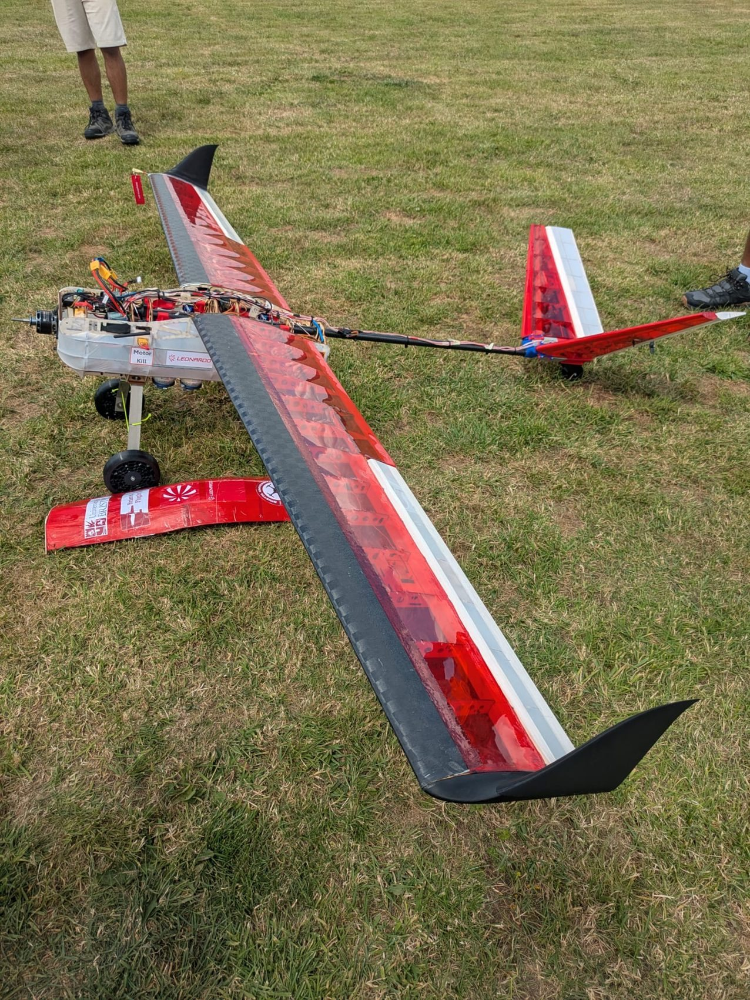
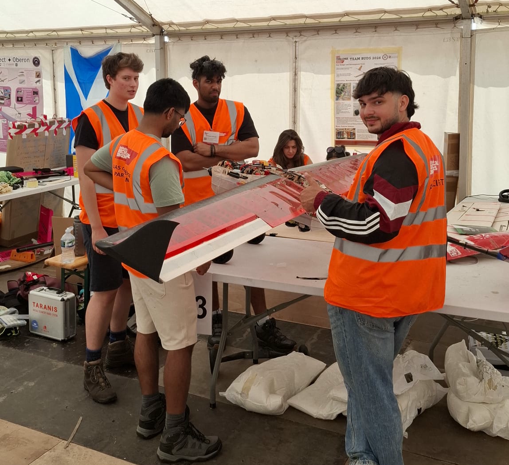

Building the wooden wings
The wings were built from wooden ribs set out along the spar and joined into complete frames; I worked with the team cutting, fitting and gluing the parts.
Bristol Drone Society · IMechE UAS Challenge · 2026
Bristol Drone Society built an autonomous fixed wing aircraft for the 2026 IMechE UAS Challenge, and I contributed to its wing fabrication.
I helped the team build the wooden wing structures, made the carbon fibre leading edges and helped glue, cut and sand the wings.
National final, June to July 2026

The wings were built from wooden ribs set out along the spar and joined into complete frames; I worked with the team cutting, fitting and gluing the parts.
Several of us held a carbon fibre leading edge in place on the ribs while the epoxy cured; I am on the right, wearing headphones.
At the national final, 29 June to 2 July 2026, the aircraft took off and flew in autonomous mode.

I joined the team at the national final.
Balsa and plywood construction, carbon fibre, epoxy